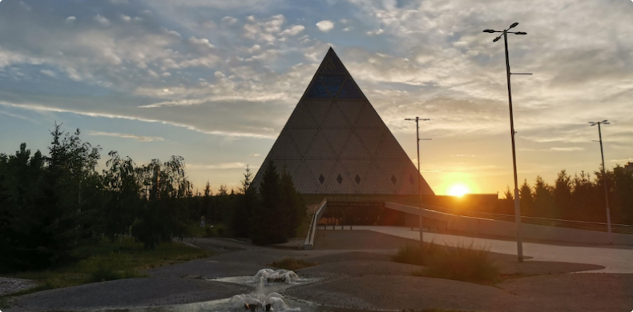

Представлено видение дальнейшего развития Ассамблеи народа Казахстана
16 декабря 2021
Государство
«Дальнейшее развитие сферы межэтнических отношений будет осуществляться с позиции усиления роли ассамблеи в укреплении общественного согласия и общенационального единства на принципах гражданства, нацеленности на решение задач стратегии «Казахстан – 2050» через всестороннюю модернизацию всех институтов ассамблеи, а также их активное участие в духовном обновлении казахстанского общества. В связи с этим будет продолжено институциональное и инфраструктурное укрепление ассамблеи, ее институтов в системе государственной политики в межэтнической сфере по ключевым направлениям», - сообщается в проекте концепции развития АНК.
Приводятся следующие семь ключевых направлений:
-
Организация взаимодействия с зарубежными партнерами ассамблеи по обеспечению системного противодействия попыткам переноса любого внешнего конфликтного потенциала на территорию Республики Казахстан и на ее граждан;
-
Активизация и актуализация совместной работы с правоохранительными органами по оперативному реагированию на обострения межэтнической ситуации, конфликты, способные перерасти в этническую плоскость, а также выстраивание системы превентивных мер по их профилактике и предотвращению;
-
Усиление многоплановой работы по интеграции всех этносоциальных групп в единую гражданскую нацию через активизацию деятельности ассамблеи как важного инструмента укрепления межэтнического взаимодействия и согласия, а также просветительской и информационно-разъяснительной работы всех ее институтов в обществе по вопросам политики единства и согласия, интеграции этносов, развития государственного языка в обществе как языка межэтнического общения;
-
Реализация широкой информационно-разъяснительной работы институтов ассамблеи, домов дружбы, государственных органов и учреждений среди населения с целью нейтрализации негативных мировоззренческих установок в сфере межэтнических отношений, распространяемых в информационном поле;
-
Внедрение новых механизмов взаимодействия институтов ассамблеи с государственными органами и иными общественными объединениями в целях укрепления общественного согласия и общенационального единства;
-
Систематизация работы и усиление роли ассамблеи в укреплении межэтнических отношений, содействии в развитии благотворительности, медиации, волонтерства в социальной сфере как механизма укрепления общественного согласия и единства;
-
Совершенствование деятельности Ассамблеи по реализации приоритетов модернизации общественного сознания, формированию прогрессивных нравственных ценностей в обществе.
Также представлены основные принципы и подходы развития Ассамблеи.
«Основными принципами Ассамблеи являются:
-
приоритет прав и свобод человека и гражданина;
-
приоритет интересов народа и государства;
-
недопустимость какой-либо дискриминации по мотивам происхождения, социального, должностного и имущественного положения, пола, расы, национальности, языка, отношения к религии, убеждений, места жительства или по любым иным обстоятельствам», - сказано в документе.
Эти принципы АНК, по словам разработчиков, «соответствуют общим принципам государственной политики в межэтнической сфере и дополняются основными положениями, озвученными на XXIX сессии ассамблеи 28 апреля 2021 года»:
-
казахстанский патриотизм, основанный на доверии и взаимодействии гражданского общества и государства;
-
объединяющая роль государственного языка;
-
постоянная модернизация нации, развитие идеи «единство в многообразии» и внедрение новых форм политического мышления;
-
интеркультурализм, основанный на общих ценностях и интересах всех этнических групп.
«Акцент в деятельности ассамблеи будет сделан на: поиске объединяющих интересов и налаживании позитивного взаимодействия между представителями различных этносов; поиске общих ценностей и интересов всех групп населения; преодолении культурных и этнических границ в процессе укрепления гражданской идентичности и совместной деятельности; интеграции представителей этносов в единое общество, в том числе путем овладения государственным языком. Признание культурных различий не должно способствовать созданию замкнутых этнокультурных сообществ. Этнокультурные объединения ассамблеи ответственны за социально-культурную интеграцию этносов в единое казахстанское общество», - добавили авторы документа.
Деятельность ассамблеи, согласно проекту, осуществляется по следующим ключевым направлениям:
-
широкое привлечение структур ассамблеи к проектам по интеграции общества, модернизации общественного сознания на основе проведения политики интеркультурализма;
-
развитие деятельности ассамблеи в области медиации, волонтерства, благотворительности и общественного контроля как интегрирующих механизмов;
-
продвижение государственного языка как языка межэтнического общения и консолидирующей основы, содействие развитию языков казахстанских этносов;
-
поддержка, сохранение и популяризация общего историко-культурного наследия народа Казахстана;
-
распространение знаний об истории формирования полиэтничного народа Казахстана и роли этносов в укреплении независимости;
-
развитие гражданского общества и молодежных организаций;
-
содействие развитию этнических средств массовой информации.
Разработаны и подходы развития АНК:
-
Разработаны и подходы развития АНК:
-
развитие механизмов сотрудничества с зарубежными партнерами ассамблеи;
-
развитие инструментов народной дипломатии, в том числе института послов дружбы ассамблеи, взаимодействие с ним в рамках международных мероприятий Ассамблеи;
-
организация работы институтов Ассамблеи по нивелированию внешних потенциальных угроз в целях недопущения обострения межэтнической ситуации среди этносов Казахстана.
Напомним, ранее были названы основные внешние угрозы для межэтнических отношений в Казахстане. Также стало известно, что число русских стремительно снижается в Казахстане, а негативный межэтнический дискурс в соцсетях в стране оказался вдвое больше позитивного.